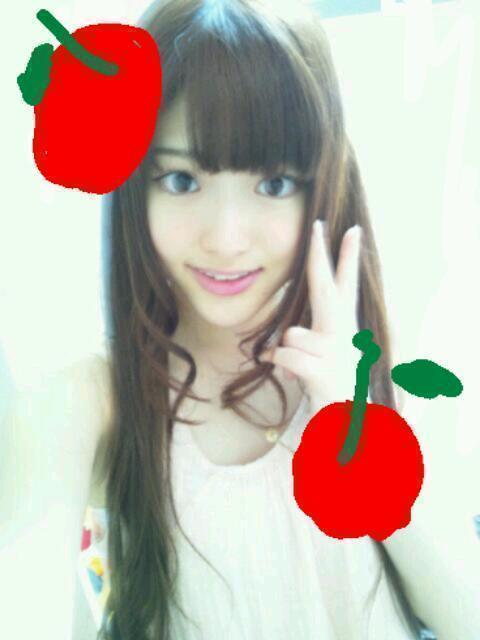

2012/0922Satなんたることだっ(o・・o)
こんばんごっっ(o・・o)
さゆりんごっっ(o・・o)
うわーん
コードギアスがみれへんよー(´；ω；`)
コードギアスってアニメねー
映画になったんよー
もう公開されたんよー
もうって、上映開始は
多分...８月４日やったけなー？
うん、１ヶ月以上前なー／(^^)＼
最近忙しくて
やっとみれると思ったら
全然やってへんのよー
もお、ほんまに
なんでなんよー(´；ω；`)
こりゃもうアニメ見返すしかないなー
最終回が凄く好きです。
握手会でギアス発動させるぞー
松村沙友理が命じる！
唐揚げを買ってこい！ってなー笑
あ、でも銀魂はじまるね☆
思ったより早い再開に
わくわく(*´ー｀*)
そして、明日は
名古屋で全国握手会なりー＼(^^)／
待ってるよー＼(^^)／
良かったら来てください！
れなりん、まあや推しの
みなさまも
よろしくお願いします＼(^-^)／
軽く自己紹介しとこ。
松村沙友理でございます。
あだ名はさゆりん！
生まれも育ちも大阪。
けど大阪人っぽくないと言われるのが
疑問です。
好な食べ物は唐揚げ！
今日もお弁当は唐揚げを選択しました☆
なにか検定をとりたいと
模索しております。
歳は２０でございます。笑
趣味は水泳であります。
水が大好きです。
ちゃぷんちゃぷん好き。
けど、日光は大の苦手でございまして
夏は部屋に引きこもって
アニメばかりみております。
スポーツも結構好きでして
テニスとバレーの経験があります...。
あれ？
この自己紹介全然おもろないやん(笑)
と、こんな感じの
おもんない人間ですが
人とお話するのは大好きなので
ぜひ、沢山話しかけてやってくだされ。
ほならーここでー
質問タイムー！
明日、松村との会話に困ってるかたは参考に
明日、残念ながら来れない方は
ぜひコメントでお話を！
ほなら、いきまーす！
今まで行った国でおすすめはどこの国？
ない方は行きたい国はどこ？
台湾に行ってから
凄く海外に興味がある松村。
よろしくお願いします＼(^-^)／
じゃじゃん！
最近自撮りを全くしてやんかったから
いま、撮った！
撮れたてほやほや！

ほなら、またねー＼(^^)／
さゆりんごでしたっ(o・・o)/~
2012/09/22 01:18
コメント(402)
こんにちりんごっ(o・・o)
握手並びなう
今日、明日と連戦よろ
BLTシャツ届いたから着ようカナ←
握手並びなう
今日、明日と連戦よろ
BLTシャツ届いたから着ようカナ←
さゆりんのヤンキー姿はなんか想像つかんなぁ～。ちなみに会社の近くでランチ650円で唐揚げ食べ放題の鶏肉専門店があるよ～。
ちなみに海外だとベタにハワイなんていいんじゃないかな～、海外的雰囲気があり、それでいて結構日本円とかでもshoppingができ、結構観光出来るところも多いし、1ドルで走っているバスがあるしね～。
ただ、飛行機で片道8時間かかるのが欠点だけど・・・。
じゃあ、握手会には行けんけど、地元での握手会楽しんできてやぁ～。
ちなみに海外だとベタにハワイなんていいんじゃないかな～、海外的雰囲気があり、それでいて結構日本円とかでもshoppingができ、結構観光出来るところも多いし、1ドルで走っているバスがあるしね～。
ただ、飛行機で片道8時間かかるのが欠点だけど・・・。
じゃあ、握手会には行けんけど、地元での握手会楽しんできてやぁ～。
さゆりんこんにちはー(*´∀｀)
コードギアスかーアニメ詳しくないからわからん；；
でも名前は聞いたことあるよ！
って公開１か月以上前やん笑
まあそのうちブルーレイとか出るさ！我慢我慢(´・ω・`)
さゆりんが面白いって言うなら見てみようかな～
…あかん！もう学校始まってまう！バイトだけしてればいいぐうたら生活が終わってしまう…orz
自己紹介はいつも通りりんごパンチかましたれ～～～！笑
大阪は行くけど名古屋は行けないからここで答えよう＼(^o^)／
オススメはイギリスかな！雰囲気が好きやー
ご飯も言うほど不味くない、ってかおいしい笑
行きたい国はボリビアかな～ウユニ塩湖ってところがあるんやけどめっちゃ綺麗で見に行きたい！さゆりんも調べてみてな！
とれたてほやほやのりんごを確認！
あまーい蜜たっぷり詰まってるん？笑
可愛いなあ(*´ω｀)
それじゃ、今日も１日頑張ってね～
またね！ﾉｼ
コードギアスかーアニメ詳しくないからわからん；；
でも名前は聞いたことあるよ！
って公開１か月以上前やん笑
まあそのうちブルーレイとか出るさ！我慢我慢(´・ω・`)
さゆりんが面白いって言うなら見てみようかな～
…あかん！もう学校始まってまう！バイトだけしてればいいぐうたら生活が終わってしまう…orz
自己紹介はいつも通りりんごパンチかましたれ～～～！笑
大阪は行くけど名古屋は行けないからここで答えよう＼(^o^)／
オススメはイギリスかな！雰囲気が好きやー
ご飯も言うほど不味くない、ってかおいしい笑
行きたい国はボリビアかな～ウユニ塩湖ってところがあるんやけどめっちゃ綺麗で見に行きたい！さゆりんも調べてみてな！
とれたてほやほやのりんごを確認！
あまーい蜜たっぷり詰まってるん？笑
可愛いなあ(*´ω｀)
それじゃ、今日も１日頑張ってね～
またね！ﾉｼ
さゆりんごぱーんち(・・)
ロンドンに行きたいよー＼(^^)／
さゆりんは他にどんなアニメが
好きなの？(^○^)
握手会行けなくて残念(´・ω・)
ロンドンに行きたいよー＼(^^)／
さゆりんは他にどんなアニメが
好きなの？(^○^)
握手会行けなくて残念(´・ω・)
さゆり～ん
明日は待ちに待った個別握手会!!
楽しみでしゃ～ないけど何喋ったらいいか分かんない
でもめっちゃ楽しみにしとったんよ～♪(○・・○)
ていうかから揚げ美味しいよね～
生まれて海外に行ったことないけど個人的にフランスが好きかな♪
香水発祥の地だし本場の香水を振り掛けてお出かけも悪くないと思うよ
まぁ明日の個別一部三回!!
さゆりんに覚えてもらえるように頑張るね～
明日は待ちに待った個別握手会!!
楽しみでしゃ～ないけど何喋ったらいいか分かんない
でもめっちゃ楽しみにしとったんよ～♪(○・・○)
ていうかから揚げ美味しいよね～
生まれて海外に行ったことないけど個人的にフランスが好きかな♪
香水発祥の地だし本場の香水を振り掛けてお出かけも悪くないと思うよ
まぁ明日の個別一部三回!!
さゆりんに覚えてもらえるように頑張るね～
ブログ上がるのが握手会始まってからとか笑いの神が降りすぎですね♪
名古屋は行けませんので
明日大阪いきまんがな!!
アニメ全くわからないので
ご指導お願いします!!
名古屋は行けませんので
明日大阪いきまんがな!!
アニメ全くわからないので
ご指導お願いします!!
やほ(^-^)
コードギアス興味あったけど見たことない(>_<)
アニメはナルトとか銀魂くらいかな？
銀魂は土方めっちゃ好き♪
今から握手行くけんなー
２ヶ月ぶりやから軽く緊張(笑)
早く握手したいよお
コードギアス興味あったけど見たことない(>_<)
アニメはナルトとか銀魂くらいかな？
銀魂は土方めっちゃ好き♪
今から握手行くけんなー
２ヶ月ぶりやから軽く緊張(笑)
早く握手したいよお
お疲れ！
名古屋は遠いくて
いけない笑
てか、幕張で
もしかしたら
りんごレーン行くよ！
行った国にの
オススメは
カナダ！！！
カナダは本当に
絶景スポットばかり笑
早く誰かを
連れていきたい！
ではでは。
今日一日握手頑張りまいやん！！
PS.俺も唐揚げ大好き！笑
名古屋は遠いくて
いけない笑
てか、幕張で
もしかしたら
りんごレーン行くよ！
行った国にの
オススメは
カナダ！！！
カナダは本当に
絶景スポットばかり笑
早く誰かを
連れていきたい！
ではでは。
今日一日握手頑張りまいやん！！
PS.俺も唐揚げ大好き！笑
さゆりんと一緒に
バレーしたいなぁ♪(´ε｀ )
おれね～
毎週木曜日にクラブチームで
バレーやってるんだけど
来週の日曜日大会なんだよ＼(^o^)／
だから応援しててね‼
ハワイ行きたい
てか乃木坂のイベント行きたいorz
てか乃木坂のイベント行きたいorz
初コメです☆*:.｡. o(≧▽≦)o .｡.:*☆
よろしくお願いします(￣▽￣)
ニュージーランドとか自然が多くて綺麗ですよ( ´ ▽ ` )ﾉ
よろしくお願いします(￣▽￣)
ニュージーランドとか自然が多くて綺麗ですよ( ´ ▽ ` )ﾉ
どうもっ（・－・）/
シゲマコです。
残念ながら海外には行ったことがないです・・・
行ってみたい国は猫の国にいきたいです・・・ないけど（笑）
猫がすごく好きなんであったらいいな～ってo(*^▽^*)o
いつも応援してるんでがんばってください。
久しぶりやー！
今日名古屋にいるからよろしく( ´ ▽ ` )ﾉ
ライブは全然見えなかったけど笑
ってことで頑張ろう！
さゆりんごや(*^^*)
全握行けないの残念や
早く東京全握きてほしいわ
りんごやっぱめっちゃかわいい(^-^)
オススメの国はイギリス
かっこいいから笑
じゃあ今日握手会楽しんでね！
行きたいお国は
『ドイツ』ですね～
サッカー好きやし、日本人選手たくさんやから行って見たいどす
『ドイツ』ですね～
サッカー好きやし、日本人選手たくさんやから行って見たいどす
さゆりん、おはようございます
オススメの国は、フランスです。
理由は、とにかく街がオシャレで絵になる。
凱旋門が見えるシャンゼリゼ通りは、
昼も夜も綺麗ですよ。
あと、歩いているフランス人さんが、
イケメン、可愛い女性多いですw
日本からだと、飛行機で30時間程かかりますが、
オススメですよー
エッフェル塔をバックにさゆりんが映った絵はがき、
そんな感じのが欲しいです（笑）
握手会、頑張って〜
さゆりん、ウォーアイニー
オススメの国は、フランスです。
理由は、とにかく街がオシャレで絵になる。
凱旋門が見えるシャンゼリゼ通りは、
昼も夜も綺麗ですよ。
あと、歩いているフランス人さんが、
イケメン、可愛い女性多いですw
日本からだと、飛行機で30時間程かかりますが、
オススメですよー
エッフェル塔をバックにさゆりんが映った絵はがき、
そんな感じのが欲しいです（笑）
握手会、頑張って〜
さゆりん、ウォーアイニー
おつかれーーーー。
アメリカにいってバスケみたい。
握手会いけなくてとてもざんねん。
さゆりんってフェアリーテイルよんでる？
おもしろいよーー。
今ぐるぐるカーテンきいてるよーー。
サンデーのさゆりんよかった。
乃木どこもおもしろかったよーー。
がんばれーーーー。
アメリカにいってバスケみたい。
握手会いけなくてとてもざんねん。
さゆりんってフェアリーテイルよんでる？
おもしろいよーー。
今ぐるぐるカーテンきいてるよーー。
サンデーのさゆりんよかった。
乃木どこもおもしろかったよーー。
がんばれーーーー。
さゆりん
こんにちは♪
ミニライブ後の、
グッズ販売列からコメントしてます。
今日のさゆりんのダンス
良かったよ！
2ndのときより、キレがあった。
見ていて、涙がでてきた。
グッズを買ったら、
握手列に並ぶね。
当然、さゆりんレーン。
また、後でね♪
こんにちは♪
ミニライブ後の、
グッズ販売列からコメントしてます。
今日のさゆりんのダンス
良かったよ！
2ndのときより、キレがあった。
見ていて、涙がでてきた。
グッズを買ったら、
握手列に並ぶね。
当然、さゆりんレーン。
また、後でね♪
自分中国の上海出身だから上海行ってみたら？
逆にいってみたいところはcs気候のところ行きたい！
地理やってたらわかるよね！？
逆にいってみたいところはcs気候のところ行きたい！
地理やってたらわかるよね！？
今、まさに名古屋全握参戦してますよミニライブは、Cブロックで、ステージからは、ちょっと遠かったから、さゆりん見づらかったけど、楽しかったよ
今日もさゆりんと一杯話すぞ！！待っててなぁー
今日もさゆりんと一杯話すぞ！！待っててなぁー
さゆりんご！
コードギアス見てないんだよね(~_~;)
なんていうか
あのルルーシュの感じが怖くて(ﾟoﾟ;;笑
これから見るわ～
確かに自己紹介が
ふつーやな(>_<)笑
んじゃぁいけないから質問！
さゆりんが高校生までで
一番大変だった学校行事は？
エピソード書いてね～
さゆりんって握手会始まる前に更新するよね
唐揚げばっか食べると太るよ（笑）
唐揚げばっか食べると太るよ（笑）
ちょっ！このタイミングで更新！？
今のところライブ終わって
今からさゆの所いくで♪
今日何回握手しようかな？
明日もあるし～
来週もあるし～
幕張の分もおいとかなやし(笑)
唐揚げは、大阪のあのたこ焼き屋の
唐揚げでいいんかな？
ギアスなしで買って来るよ♪
ギアスは、もっと強烈なやつにして(笑)
んじゃ今からさゆの所いくで～♪
今のところライブ終わって
今からさゆの所いくで♪
今日何回握手しようかな？
明日もあるし～
来週もあるし～
幕張の分もおいとかなやし(笑)
唐揚げは、大阪のあのたこ焼き屋の
唐揚げでいいんかな？
ギアスなしで買って来るよ♪
ギアスは、もっと強烈なやつにして(笑)
んじゃ今からさゆの所いくで～♪
久しぶりのコメントだ〜(・∀・)
さゆりんもギアス見てたんだね〜((´^ω^))
アニメ好きだしバレーもしてたから意外と共通点あるなあーとか勝手に思ってました（・∀・）
なにより同い年なんですね（笑）
でもねー今日は名古屋に行けないので残念ながらお話することはできないんですねー。。
幕張まで楽しみとして取っておきまーす！
さゆりんがんばりんごー＼(^o^)／
さゆりんもギアス見てたんだね〜((´^ω^))
アニメ好きだしバレーもしてたから意外と共通点あるなあーとか勝手に思ってました（・∀・）
なにより同い年なんですね（笑）
でもねー今日は名古屋に行けないので残念ながらお話することはできないんですねー。。
幕張まで楽しみとして取っておきまーす！
さゆりんがんばりんごー＼(^o^)／
頑張ってください
応援してます！
質問
俺は中学生やけど応援してい？
あと1番好きなファッションは？
あと会ったらさゆりんごパンチしてもらっていいですか？
応援してます！
質問
俺は中学生やけど応援してい？
あと1番好きなファッションは？
あと会ったらさゆりんごパンチしてもらっていいですか？
うっきーうっきー
さゆりんのこと
知れました(笑)
外国行ったことないー(；∇；)/~~
行くなら、
なんとなくイタリアww
ほな
後で握手行くわー(^^)
さらば！
さゆりんのこと
知れました(笑)
外国行ったことないー(；∇；)/~~
行くなら、
なんとなくイタリアww
ほな
後で握手行くわー(^^)
さらば！
俺はイギリスに行きたい！って高校の頃から思ってるんだよねー
いつか絶対行くわ！
あとトルコ辺りはアジアとヨーロッパの間にあるから、アジアっぽさとヨーロッパっぽさの両方が存在してて面白いって聞いたことあるよ！
こっちもいつか行ってみたい！
んじゃ、名古屋 大坂 いってらっしゃーい
NAMERO
いつか絶対行くわ！
あとトルコ辺りはアジアとヨーロッパの間にあるから、アジアっぽさとヨーロッパっぽさの両方が存在してて面白いって聞いたことあるよ！
こっちもいつか行ってみたい！
んじゃ、名古屋 大坂 いってらっしゃーい
NAMERO
隊長参上！
ｱﾆﾒとか全くわからん(笑)
教えてくださいな！
名古屋なう。
今日は松村さんと握手しに
来ました。
もっと詳しく自己紹介
お願いします！
時間少ないから無理だけどな(笑)
んじゃ握手行きまーす
さゆりん行きまーす。
僕は日本から出たくないわー(´･ω･｀)
握手会楽しんでね！
握手会楽しんでね！
さゆりんこんにちは♪
今日行けれん～(T-T)
東京のは行くぞ～(^_^)/
行ってみたい国はイギリス♪
観光したいわ～(^_^)/
握手会楽しんでな♪
今日行けれん～(T-T)
東京のは行くぞ～(^_^)/
行ってみたい国はイギリス♪
観光したいわ～(^_^)/
握手会楽しんでな♪
まっつん、Hello！(^o^)/
唐揚げなら、いつでも！
(o^-')b
でも、今週末は渡しに行けないよー(＞＜)
どうすれば…(笑)？
で、自己紹介、久々だから、凄くインパクトのあるやつかと思ったら、意外と普通やんか(笑)！
ま、でも、まっつんらしいユルい自己紹介だから、いっか！←
これなら、ちゃぷんちゃぷん好きな人が、いっぱい来てくれると思うしね！←←
で、今回の質問…
パスポートも持ってないウチには…(笑)。
ただ、行きたい国だったら、ドイツかなぁ…
大学時代、第２外国語で、独語を習ってたんで…
でも、全く喋れないんだけどね(笑)。
今、ふと思ったのは、ドイツに行って、美味しいビールを飲みたい気分！
喉が渇いてるからだけかもなんだけど(笑)。
じゃ、りんごちゃんほやほやの写メを見て、今日行けない悲しさを慰めようと思いまっす！( ´艸｀)(笑)
唐揚げなら、いつでも！
(o^-')b
でも、今週末は渡しに行けないよー(＞＜)
どうすれば…(笑)？
で、自己紹介、久々だから、凄くインパクトのあるやつかと思ったら、意外と普通やんか(笑)！
ま、でも、まっつんらしいユルい自己紹介だから、いっか！←
これなら、ちゃぷんちゃぷん好きな人が、いっぱい来てくれると思うしね！←←
で、今回の質問…
パスポートも持ってないウチには…(笑)。
ただ、行きたい国だったら、ドイツかなぁ…
大学時代、第２外国語で、独語を習ってたんで…
でも、全く喋れないんだけどね(笑)。
今、ふと思ったのは、ドイツに行って、美味しいビールを飲みたい気分！
喉が渇いてるからだけかもなんだけど(笑)。
じゃ、りんごちゃんほやほやの写メを見て、今日行けない悲しさを慰めようと思いまっす！( ´艸｀)(笑)
こんにちはー！
「亡国のアギト」ですね！！
前売り券買ったんですが、自分もまだ見てないです 笑
松村さんのギアスは、ルルーシュの能力なのですね 笑
行きたい国は、フランスですかねー！
美術館に行ってみたいので！！
「亡国のアギト」ですね！！
前売り券買ったんですが、自分もまだ見てないです 笑
松村さんのギアスは、ルルーシュの能力なのですね 笑
行きたい国は、フランスですかねー！
美術館に行ってみたいので！！
さゆりんごお疲れさま。
今日握手会いくよー。
最近フランス行ったよ。
今日よろしくお願いします。
今日握手会いくよー。
最近フランス行ったよ。
今日よろしくお願いします。
行った国の中でおすすめはポーランド
日本ではマイナーですが
実はヨーロッパでは人気な観光地なんです。
特に有名なのは
全長300キロ（単位間違えてないですよ）のヴィエリチカ岩塩坑。
中に礼拝堂があったり地下都市になってます。
今すぐフラッと出掛けても
そのまま住み着いて生きていけそうなぐらい
人が優しくて、かつ、勤勉です。
日本ではマイナーですが
実はヨーロッパでは人気な観光地なんです。
特に有名なのは
全長300キロ（単位間違えてないですよ）のヴィエリチカ岩塩坑。
中に礼拝堂があったり地下都市になってます。
今すぐフラッと出掛けても
そのまま住み着いて生きていけそうなぐらい
人が優しくて、かつ、勤勉です。
さゆりん こんにちは！
オレも、コードギアス見たかった
さゆりん、これからも頑張ってね応援するよー
オレも、コードギアス見たかった
さゆりん、これからも頑張ってね応援するよー
今日は握手会行けんくて残念(>_<)
幕張は行くでー♪( ´θ｀)ノ
オススメの国はイタリア！
なんかよく分からんけど良かったで！
幕張は行くでー♪( ´θ｀)ノ
オススメの国はイタリア！
なんかよく分からんけど良かったで！
コードギアス 亡国のアキト 第1章「翼竜は舞い降りた」
新宿の「新宿バルト9」て映画館でまだやってるみたいだよ。
1日1回の上映で夜中だったり、早朝だったりするみたいだけど
調べてみて見に行ける時間があるならいってらっしゃい＾＾
横浜の個別握手会、まっちゅんに会いに行くのでよろしくね。
新宿の「新宿バルト9」て映画館でまだやってるみたいだよ。
1日1回の上映で夜中だったり、早朝だったりするみたいだけど
調べてみて見に行ける時間があるならいってらっしゃい＾＾
横浜の個別握手会、まっちゅんに会いに行くのでよろしくね。
自己紹介ありがと！
大阪握手会ワクワクやで!!
唐揚げはヤバいよなぁゝ∇＜
握手会で話したいけどコメントする!!
海外いったことない!!フランスいきたい!!
でわまたー
大阪握手会ワクワクやで!!
唐揚げはヤバいよなぁゝ∇＜
握手会で話したいけどコメントする!!
海外いったことない!!フランスいきたい!!
でわまたー
さゆりん
こんにちは～♪
今名古屋に向かってるんよ～
今日と明日たくさん握手してお話ししよなっ！！
楽しみやわぁ～
海外かぁ～
ステキな場所、いっぱいあるよねー
うーん、どこやろ！？
クロアチアがキレイやったかな☆
街並みとか海とかねっ♪
でもまだ見たことない世界がたくさんあるから、
自分の目でもっと見てみたいなぁ～
ほなら、もうちょっと待っててなぁ～
ほな、またねー
こんにちは～♪
今名古屋に向かってるんよ～
今日と明日たくさん握手してお話ししよなっ！！
楽しみやわぁ～
海外かぁ～
ステキな場所、いっぱいあるよねー
うーん、どこやろ！？
クロアチアがキレイやったかな☆
街並みとか海とかねっ♪
でもまだ見たことない世界がたくさんあるから、
自分の目でもっと見てみたいなぁ～
ほなら、もうちょっと待っててなぁ～
ほな、またねー
私も銀魂好き\(//∇//)\
ジャスタウェイ(^O^)／
大阪の全国握手会行く予定やったのに( ; _ ; )/~~~
無くなってもーた( ; _ ; )/~~~
ほんまに そっく。・゜・(ノД`)・゜・。
個別買ってなかったから走れ！bicycleの握手会全く行かれへん( ; _ ; )/~~~
おいでシャンプーは全国握手会が土曜日で学校やったからお父さんにあかん！て言われて…
ぐるぐるカーテンの時しか行けてないわ。・°°・(＞_＜)・°°・。
私「大阪桐蔭の中2です！」
さゆりんご「すごーい！」
って会話したのが思い出されます。
二回目回ったときは
さゆりんご「また来てくれたん！」
っていってくれて嬉しかったのだ～\(//∇//)\
4thシングルは日曜日にある事を祈る＿φ(￣ー￣ )
は
や
く
さ
ゆ
り
ん
ご
に
会
い
た
い
よ
\(//∇//)\
大阪無い分名古屋で楽しんで来てね☆*:.｡. o(≧▽≦)o .｡.:*☆
一生応援してます(^_−)−☆
がんばりんご(^^)／~~~
( T_T)＼(^-^ )
ジャスタウェイ(^O^)／
大阪の全国握手会行く予定やったのに( ; _ ; )/~~~
無くなってもーた( ; _ ; )/~~~
ほんまに そっく。・゜・(ノД`)・゜・。
個別買ってなかったから走れ！bicycleの握手会全く行かれへん( ; _ ; )/~~~
おいでシャンプーは全国握手会が土曜日で学校やったからお父さんにあかん！て言われて…
ぐるぐるカーテンの時しか行けてないわ。・°°・(＞_＜)・°°・。
私「大阪桐蔭の中2です！」
さゆりんご「すごーい！」
って会話したのが思い出されます。
二回目回ったときは
さゆりんご「また来てくれたん！」
っていってくれて嬉しかったのだ～\(//∇//)\
4thシングルは日曜日にある事を祈る＿φ(￣ー￣ )
は
や
く
さ
ゆ
り
ん
ご
に
会
い
た
い
よ
\(//∇//)\
大阪無い分名古屋で楽しんで来てね☆*:.｡. o(≧▽≦)o .｡.:*☆
一生応援してます(^_−)−☆
がんばりんご(^^)／~~~
( T_T)＼(^-^ )
さゆりん
こんにちは～♪
今名古屋に向かってるんよ～
今日と明日たくさん握手してお話ししよなっ！！
楽しみやわぁ～
海外かぁ～
ステキな場所、いっぱいあるよねー
うーん、どこやろ！？
クロアチアがキレイやったかな☆
街並みとか海とかねっ♪
でもまだ見たことない世界がたくさんあるから、
自分の目でもっと見てみたいなぁ～
ほなら、もうちょっと待っててなぁ～
ほな、またねー
こんにちは～♪
今名古屋に向かってるんよ～
今日と明日たくさん握手してお話ししよなっ！！
楽しみやわぁ～
海外かぁ～
ステキな場所、いっぱいあるよねー
うーん、どこやろ！？
クロアチアがキレイやったかな☆
街並みとか海とかねっ♪
でもまだ見たことない世界がたくさんあるから、
自分の目でもっと見てみたいなぁ～
ほなら、もうちょっと待っててなぁ～
ほな、またねー
さゆりーん！
握手会行けないけど
めいっぱい楽しんできてね～☆
握手会行けないけど
めいっぱい楽しんできてね～☆
さゆりんごブログ久しぶりちゃう？＼(^o^)／
気のせいかな？
俺は海外行ったことないから
行ってみたいなー
台湾も良さそうやね〜
日本から近いし！
握手会楽しんでな＼(^o^)／
行けないけど(´；ω；｀)
気のせいかな？
俺は海外行ったことないから
行ってみたいなー
台湾も良さそうやね〜
日本から近いし！
握手会楽しんでな＼(^o^)／
行けないけど(´；ω；｀)
あらたまって自己紹介乙でーす
外国行ったことないっす(>_<)
さゆりんのブログ見て台湾行ってみたいな～
握手会頑張ってね！！
外国行ったことないっす(>_<)
さゆりんのブログ見て台湾行ってみたいな～
握手会頑張ってね！！
こんにちは！
アニメの事は、さっぱりわからない…
僕も水泳は好きで、時々プールに行ってますよ。決して速くは泳げませんが。
バレーといえば、最近、『おっぱいバレー』のDVD観ましたが、面白かったですよ！
海外は、ほとんど知らないのですが、ギリシャの海辺の街並みを見てみたいです。
ようやく涼しくなってきましたが、夏の疲れが出やすい時期でもあり、食べ物も美味しい時期でもありますので、しっかりと、栄養をとって下さいね！
それでは、また！
アニメの事は、さっぱりわからない…
僕も水泳は好きで、時々プールに行ってますよ。決して速くは泳げませんが。
バレーといえば、最近、『おっぱいバレー』のDVD観ましたが、面白かったですよ！
海外は、ほとんど知らないのですが、ギリシャの海辺の街並みを見てみたいです。
ようやく涼しくなってきましたが、夏の疲れが出やすい時期でもあり、食べ物も美味しい時期でもありますので、しっかりと、栄養をとって下さいね！
それでは、また！
このあと握手に行くからよろしくー！！(^O^)／
こんにちりんごっ
ライブ終わったところでっせ
アニメわからんからなー
良かった国は握手で話すわ
今日も甘い蜜たっぷりさゆりんごいただきましたー！
ではでは～
ライブ終わったところでっせ
アニメわからんからなー
良かった国は握手で話すわ
今日も甘い蜜たっぷりさゆりんごいただきましたー！
ではでは～
おれもさゆりんと同じで
唐揚げと銀魂すきだよ♪(*^^*)
握手会行けないけどがんばってね！
唐揚げと銀魂すきだよ♪(*^^*)
握手会行けないけどがんばってね！
こんにちは沙友理ちゃん アニメか、今のは分からんな
名前は聞いた事はあるけど、でもコードギアスは何となく分かる
アメリカに行った時は、ダイハードが撮影されたビルを見て
高まったな。
自分は韓国や台湾もグルメツアーで行ってみたい。
さゆりちゃんは明るいから番組のレポーターとかイイかも、
イモトみたいにどこの国でも平気かな。
今日は、せっかちなかたつむり 披露するのかな、見たかった
です。
前回の写メはマガジンの衣装or私服？ では、また
名前は聞いた事はあるけど、でもコードギアスは何となく分かる
アメリカに行った時は、ダイハードが撮影されたビルを見て
高まったな。
自分は韓国や台湾もグルメツアーで行ってみたい。
さゆりちゃんは明るいから番組のレポーターとかイイかも、
イモトみたいにどこの国でも平気かな。
今日は、せっかちなかたつむり 披露するのかな、見たかった
です。
前回の写メはマガジンの衣装or私服？ では、また


残念ながら今日は行けず。。。
名古屋楽しんでね～！！
オススメの国かー
中国いいよ！北京、上海！！
行きたい国はスイスとかフィンランドかな！！